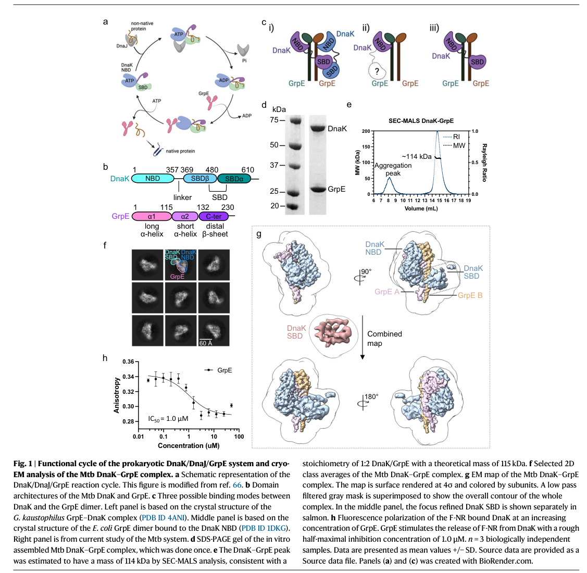

GrpE is the bacterial nucleotide exchange factor (NEF) for the Hsp70 chaperone DnaK, functioning as the third component of the conserved DnaK/DnaJ/GrpE (KJE) chaperone system. It is a homodimeric, "cruciform"-shaped protein with a long N-terminal coiled-coil and a globular C-terminal head domain that docks onto the nucleotide-binding domain (NBD) of DnaK. In the chaperone cycle, unfolded substrate proteins are first bound by DnaJ (Hsp40), which delivers them to DnaK and stimulates ATP hydrolysis to produce the ADP-bound, high substrate-affinity state of DnaK. GrpE then binds the DnaK NBD and induces conformational opening of the nucleotide-binding cleft (notably rotation of NBD subdomain IIB), accelerating ADP release; subsequent ATP rebinding resets DnaK to its low-affinity state and triggers substrate release, completing the cycle. Through this activity GrpE enables the iterative ATP-driven cycles required for de novo protein folding, refolding of stress-denatured proteins, and prevention of protein aggregation. The thermolabile coiled-coil of GrpE has been proposed to act as a thermosensor that modulates NEF activity with temperature. GrpE acts in the cytoplasm/cytosol and is part of the heat-shock and general stress response; in P. putida KT2440 it is induced under heat and chemical (e.g. phenol/solvent) stress.
| GO Term | Evidence | Action | Reason |
|---|---|---|---|
|
GO:0000774
adenyl-nucleotide exchange factor activity
|
IEA
GO_REF:0000120 |
ACCEPT |
Summary: This is the defining molecular function of GrpE - it is the nucleotide exchange factor for DnaK (Hsp70), promoting ADP release so that ATP can rebind. The annotation is from InterPro (IPR000740, the GrpE family signature) plus PANTHER and is fully consistent with the UniProt FUNCTION statement and the entire GrpE literature.
Reason: Core, defining molecular function of GrpE. Universally conserved across the GrpE family and well supported by the InterPro/HAMAP family signature and mechanistic structural studies of bacterial DnaK-GrpE complexes.
|
|
GO:0005737
cytoplasm
|
IEA
GO_REF:0000120 |
ACCEPT |
Summary: GrpE acts in the cytoplasm as a cofactor of the cytosolic DnaK chaperone. The UniProt SUBCELLULAR LOCATION (HAMAP MF_01151) annotates Cytoplasm, and KT2440 proteomics detected GrpE among cytoplasmic stress-induced proteins.
Reason: Correct subcellular localization for a bacterial DnaK cofactor. Consistent with HAMAP rule and with the cytosolic localization of its DnaK/DnaJ partners.
|
|
GO:0005829
cytosol
|
IEA
GO_REF:0000118 |
ACCEPT |
Summary: TreeGrafter (phylogenetic) annotation to cytosol, the more specific child of cytoplasm. Consistent with GrpE function as a soluble cofactor of cytosolic DnaK.
Reason: Correct and slightly more specific localization than the cytoplasm annotation. Both are biologically appropriate for GrpE; retaining the more specific cytosol term is reasonable.
|
|
GO:0006457
protein folding
|
IEA
GO_REF:0000002 |
ACCEPT |
Summary: GrpE is an integral component of the DnaK/DnaJ/GrpE chaperone machine, which assists de novo protein folding and refolding of stress-denatured proteins. Several rounds of GrpE-driven nucleotide exchange are required for efficient folding. InterPro-based annotation is well supported.
Reason: Accurately captures the biological process in which GrpE participates. GrpE is not itself a foldase but is essential to the folding cycle of the KJE system.
|
|
GO:0042803
protein homodimerization activity
|
IEA
GO_REF:0000002 |
ACCEPT |
Summary: GrpE functions as a homodimer; dimerization (via the coiled-coil) is essential for its NEF activity and for engaging DnaK in the asymmetric 1:2 DnaK:GrpE complex. UniProt SUBUNIT annotates Homodimer. Well supported by InterPro and structural studies.
Reason: GrpE is obligately dimeric and dimerization is required for function. Correct molecular function annotation.
|
|
GO:0051087
protein-folding chaperone binding
|
IEA
GO_REF:0000002 |
ACCEPT |
Summary: GrpE binds directly to the Hsp70 chaperone DnaK (a protein-folding chaperone), docking onto its nucleotide-binding domain. This binding is the basis of its NEF activity. InterPro-based annotation is appropriate and more informative than generic protein binding.
Reason: GrpE's physical interaction with the DnaK chaperone is central to its function. The term correctly describes this binding to a folding chaperone rather than an uninformative generic protein binding term.
|
Q: Does the proposed thermosensor behavior of the GrpE coiled-coil operate at physiologically relevant temperatures for P. putida, given its mesophilic environmental lifestyle?
Experiment: Determine the operon structure and promoter(s) of the grpE-dnaK-dnaJ locus (PP_4728 region) in P. putida KT2440 (e.g. by RNA-seq/transcription start site mapping and co-transcription assays) to confirm the inferred Pseudomonas chaperone gene cluster organization.
Experiment: Test whether a grpE conditional/depletion mutant in KT2440 impairs growth and protein refolding under heat and solvent (phenol) stress, to directly link the NEF function to stress-tolerance phenotypes in this organism.
The research report should be a detailed narrative explaining the function, biological processes, and localization of the gene product. Citations should be given for all claims.
You should prioritize authoritative reviews and primary scientific literature when conducting research. You can supplement
this with annotations you find in gene/protein databases, but these can be outdated or inaccurate.
We are specifically interested in the primary function of the gene - for enzymes, what reaction is catalyzed, and what is the substrate specificity? For transporters, what is the substrate? For structural proteins or adapters, what is the broader structural role? For signaling molecules, what is the role in the pathway.
We are interested in where in or outside the cell the gene product carries out its function.
We are also interested in the signaling or biochemical pathways in which the gene functions. We are less interested in broad pleiotropic effects, except where these elucidate the precise role.
Include evidence where possible. We are interested in both experimental evidence as well as inference from structure, evolution, or bioinformatic analysis. Precise studies should be prioritized over high-throughput, where available.
The UniProt-provided target Q88DU1 from Pseudomonas putida strain KT2440 is annotated as Protein GrpE, an Hsp70 (DnaK) cofactor / nucleotide exchange factor (NEF) and member of the conserved GrpE family. The retrieved scientific literature consistently uses “GrpE” to denote the bacterial DnaK NEF (a dimeric co-chaperone with coiled-coil and head domains), matching the UniProt description and the listed GrpE-family domains (GrpE, GrpE_CC, GrpE_head). No conflicting “grpE” gene identity (unrelated function) was found in the retrieved corpus. (rossi2024newinsightsinto pages 1-2, xiao2024structureofthe pages 1-2)
GrpE is the canonical bacterial nucleotide exchange factor (NEF) for DnaK (Hsp70). In the bacterial DnaK chaperone cycle, DnaJ (Hsp40) stimulates DnaK ATP hydrolysis to an ADP-bound, high-substrate-affinity state; GrpE then promotes ADP release so ATP can rebind, shifting DnaK to an ATP-bound, low-substrate-affinity conformation that favors client/substrate release and chaperone recycling. (craig2021leveragingpseudomonasstress pages 6-7, rossi2024newinsightsinto pages 1-2, xiao2024structureofthe pages 1-2)
Recent structural synthesis describes GrpE as a dimeric “cruciform/crucifix” protein comprising a long coiled-coil plus a globular C-terminal head domain (with β-bundles and α-helices), with dimerization essential for function. This architecture maps naturally to the UniProt-listed GrpE family domains for Q88DU1 (coiled-coil and head). (rossi2024newinsightsinto pages 1-2)
GrpE is widely discussed as a thermosensor-like co-chaperone: in E. coli models, GrpE’s coiled-coil is thermolabile (melting around ~48°C) and elevated temperature can weaken NEF function, biasing DnaK toward the ADP/high-affinity state. (rossi2024newinsightsinto pages 1-2)
GrpE is not an enzyme that catalyzes a substrate-to-product chemical transformation; instead its primary molecular function is allosteric regulation of DnaK’s nucleotide state.
Two 2024 studies provide updated mechanistic detail on how GrpE accelerates nucleotide exchange:
A major refinement from 2024 cryo-EM work is that GrpE’s role is not limited to ADP release: the GrpE dimer engages DnaK in an asymmetric 1:2 complex and its motions are proposed to concomitantly couple ADP release (NBD) with client release (SBD). The same work reports functional dependence on the GrpE N-terminus for efficient substrate release. (xiao2024structureofthe pages 1-2, xiao2024structureofthe pages 8-9)
The key functional interaction partners (DnaK/DnaJ) are cytosolic chaperones, and GrpE is a canonical DnaK cofactor; thus, GrpE is best annotated as an intracellular/cytosolic protein.
Direct KT2440 proteomics under phenol stress identified many cytoplasmic or periplasmic proteins, and GrpE was among the induced stress proteins detected in that dataset, consistent with an intracellular role in proteostasis. (santos2004insightsintopseudomonas pages 1-2)
Heat-shock response network context in Pseudomonas: In P. putida, the heat-shock response is described as similar to E. coli, and the chaperone systems DnaK/DnaJ/GrpE and GroEL/GroES participate in regulating the heat-shock sigma factor σ32/RpoH by binding/inactivating it in non-stress conditions (a central feedback logic in bacterial heat-shock control). This places GrpE in a core stress-response and proteostasis pathway, even though GrpE itself is not a transcription factor. (ito2014geneticandphenotypic pages 2-3)
Chemical/solvent stress in KT2440: Quantitative proteomics of phenol-induced stress in P. putida KT2440 reported that, after 1 hour of sudden phenol exposure (e.g., 600 mg/L sublethal phenol), 68 proteins increased and 13 decreased, and GrpE was explicitly among the upregulated “general stress” proteins. This provides direct KT2440 evidence that GrpE participates in the early solvent/toxicant stress response through proteostasis maintenance. (santos2004insightsintopseudomonas pages 1-2)
Within a closely related P. putida strain (PCL1445), grpE, dnaK, and dnaJ are genomically linked such that dnaK lies downstream of grpE and upstream of dnaJ. This supports a conserved Pseudomonas genomic organization for the KJE chaperone system (GrpE–DnaK–DnaJ) and is consistent with the expectation that KT2440 PP_4728 (grpE) is part of a heat-shock chaperone locus. (dubern2005theheatshock pages 1-2)
Limitation: In the retrieved corpus, no paper explicitly mapped KT2440 PP_4728’s operon boundaries/promoters (e.g., transcription start sites, co-transcription assays). Therefore, KT2440-specific operon structure is inferred from conservation and strain-level evidence rather than directly shown here.
In P. putida PCL1445, mutations in the heat-shock genes dnaK/dnaJ/grpE affected transcriptional output of a secondary-metabolite pathway (putisolvin biosynthesis), supporting that proteostasis modules can have broad regulatory consequences through stress physiology and folding-dependent control, but these are most parsimoniously interpreted as indirect outcomes of chaperone-network perturbation rather than a dedicated, pathway-specific role for GrpE. (dubern2005theheatshock pages 1-2)
A 2024 cryo-EM study reported an asymmetric 1:2 DnaK:GrpE complex and described multi-body motions (“ratcheting”) of the GrpE dimer that modulate both DnaK’s nucleotide-binding and substrate-binding domains; the study also reports that GrpE’s N-terminus is critical for substrate release in functional assays and that the DnaK–GrpE interface is essential for folding activity in vitro and in vivo. (xiao2024structureofthe pages 1-2, xiao2024structureofthe pages 8-9)
Figure evidence from this study (structure and stoichiometry; domain motions) is shown in the retrieved image panels. (xiao2024structureofthe media aae0080b, xiao2024structureofthe media 6cad8a4d)
A 2024 Journal of Biological Chemistry paper synthesizes newer structural/functional insights for the E. coli DnaK–GrpE complex, emphasizing a larger GrpE-associated movement of NBD subdomain IIB and a more open nucleotide-binding cleft consistent with GrpE-induced increases in ADP off-rate; it also reiterates GrpE’s dimeric cruciform architecture and its thermolability (~48°C melting) as part of its physiological behavior. (rossi2024newinsightsinto pages 1-2)
Although GrpE itself is not typically engineered as a standalone “product enzyme,” its function is central to stress robustness and protein folding capacity, which are key constraints in microbial biotechnology.
A review focusing on Pseudomonas stress responses highlights the DnaK/DnaJ/GrpE system as a core chaperone module preventing aggregation and aiding refolding under stress, and frames such stress physiology as something that can be leveraged for industrial applications (e.g., improving strain robustness in harsh process conditions). (craig2021leveragingpseudomonasstress pages 6-7)
In KT2440 specifically, induction of GrpE under phenol stress provides a concrete example of how the KJE system is engaged during toxicant exposure relevant to bioprocessing and biodegradation contexts. (santos2004insightsintopseudomonas pages 1-2)
For UniProt Q88DU1 / PP_4728 in P. putida KT2440, the best-supported primary annotation is:
Direct KT2440 evidence in this corpus is strongest for stress-responsive expression at the protein level (phenol stress proteomics) and supports the assignment of GrpE to solvent/toxicant stress proteostasis. (santos2004insightsintopseudomonas pages 1-2)
Regulatory/operon context for KT2440 PP_4728 is not directly documented in the retrieved KT2440 papers; the best available evidence is a closely related P. putida strain showing grpE–dnaK–dnaJ linkage. (dubern2005theheatshock pages 1-2)
| Claim/Topic | Key findings (1-2 sentences) | Organism/strain | Evidence type | Publication (year, journal) | URL | Notes for annotation (localization/pathway) |
|---|---|---|---|---|---|---|
| Target identity verification for Q88DU1 / PP_4728 | The requested protein is annotated as GrpE, the bacterial Hsp70 cofactor/nucleotide-exchange factor of the DnaK system. Available literature on GrpE in Pseudomonas and broader bacteria matches this family-level role, so functional annotation should center on the DnaK/DnaJ/GrpE chaperone cycle rather than any unrelated “grpE” usage in other taxa. (craig2021leveragingpseudomonasstress pages 6-7, dubern2005theheatshock pages 1-2, ito2014geneticandphenotypic pages 2-3, rossi2024newinsightsinto pages 1-2) | Pseudomonas putida KT2440 / related Pseudomonas strains / bacteria broadly | Comparative annotation plus literature synthesis | Craig et al. 2021, Frontiers in Microbiology; Dubern et al. 2005, Journal of Bacteriology; Ito et al. 2014, MicrobiologyOpen; Rossi et al. 2024, Journal of Biological Chemistry | https://doi.org/10.3389/fmicb.2021.660134; https://doi.org/10.1128/jb.187.17.5967-5976.2005; https://doi.org/10.1002/mbo3.217; https://doi.org/10.1016/j.jbc.2023.105574 | Annotate as a cytosolic co-chaperone in the DnaK/DnaJ/GrpE proteostasis and heat-shock pathway; not an enzyme or transporter. |
| Primary molecular function of GrpE | GrpE is the nucleotide-exchange factor (NEF) for DnaK/Hsp70: after DnaJ-stimulated ATP hydrolysis converts DnaK to the ADP-bound high-affinity substrate state, GrpE promotes ADP release so ATP can rebind, reopening DnaK and enabling substrate release. This is the core conserved function most relevant to Q88DU1 annotation. (craig2021leveragingpseudomonasstress pages 6-7, ito2014geneticandphenotypic pages 2-3, rossi2024newinsightsinto pages 1-2, xiao2024structureofthe pages 1-2) | Bacteria broadly; conserved relevance to P. putida KT2440 | Review plus structural/mechanistic primary studies | Craig et al. 2021, Frontiers in Microbiology; Ito et al. 2014, MicrobiologyOpen; Rossi et al. 2024, Journal of Biological Chemistry; Xiao et al. 2024, Nature Communications | https://doi.org/10.3389/fmicb.2021.660134; https://doi.org/10.1002/mbo3.217; https://doi.org/10.1016/j.jbc.2023.105574; https://doi.org/10.1038/s41467-024-44933-9 | GO-style annotation: nucleotide exchange factor activity, protein folding, response to heat/protein damage; acts on DnaK-bound polypeptides, not on a small-molecule substrate. |
| Cellular role in proteostasis / heat-shock biology | The DnaK/DnaJ/GrpE system is a major bacterial chaperone module involved in folding nascent and stress-damaged proteins and in recovery from protein aggregation. In Pseudomonas, this system is part of the heat-shock response network and contributes to survival under thermal and chemical stress. (craig2021leveragingpseudomonasstress pages 6-7, ito2014geneticandphenotypic pages 2-3) | Pseudomonas spp.; P. putida KT2442-related heat-shock studies | Review and genetics/physiology | Craig et al. 2021, Frontiers in Microbiology; Ito et al. 2014, MicrobiologyOpen | https://doi.org/10.3389/fmicb.2021.660134; https://doi.org/10.1002/mbo3.217 | Annotate to protein quality control/proteostasis, heat-shock response, and cooperation with ClpB in disaggregation pathways. |
| KT2440-specific stress responsiveness of GrpE | Quantitative proteomics in P. putida KT2440 showed GrpE among proteins upregulated after 1 h phenol exposure at sublethal concentrations; the study identified 68 induced proteins and 13 decreased proteins, placing GrpE in the early solvent/general stress response. (santos2004insightsintopseudomonas pages 1-2) | P. putida KT2440 | 2-DE proteomics + MALDI-TOF MS | Santos et al. 2004, PROTEOMICS | https://doi.org/10.1002/pmic.200300793 | Direct KT2440 evidence supports annotation to phenol/solvent stress response and likely cytosolic stress-induced chaperone activity. |
| Localization inference for KT2440 GrpE | The KT2440 phenol-stress proteome largely identified cytoplasmic and periplasmic proteins, while GrpE is a canonical DnaK cofactor functioning on cytosolic DnaK/Hsp70. Combined family knowledge strongly supports a cytosolic intracellular localization for PP_4728. (santos2004insightsintopseudomonas pages 1-2, rossi2024newinsightsinto pages 1-2) | P. putida KT2440; bacteria broadly | Proteomics context plus conserved mechanism | Santos et al. 2004, PROTEOMICS; Rossi et al. 2024, Journal of Biological Chemistry | https://doi.org/10.1002/pmic.200300793; https://doi.org/10.1016/j.jbc.2023.105574 | Recommended annotation: cellular component = cytosol; no evidence here for secretion, membrane insertion, or periplasmic residence. |
| Pseudomonas regulatory/operon context | In P. putida PCL1445, grpE-dnaK-dnaJ are genomically linked, with dnaK located downstream of grpE and upstream of dnaJ, supporting a conserved heat-shock chaperone gene cluster in Pseudomonas. Although this is not KT2440-specific proof for PP_4728 operon structure, it is strong genus-level context for annotation. (dubern2005theheatshock pages 1-2) | P. putida PCL1445 | Strain-specific genetics/regulatory analysis | Dubern et al. 2005, Journal of Bacteriology | https://doi.org/10.1128/jb.187.17.5967-5976.2005 | Useful for annotation notes: likely part of a tricistronic/clustered heat-shock locus with dnaK and dnaJ in Pseudomonas. |
| Broader Pseudomonas putida regulatory relevance | In PCL1445, dnaK/dnaJ/grpE positively influenced putisolvin biosynthesis, but low-temperature induction required dnaK and dnaJ more clearly than grpE, indicating that GrpE can have regulatory consequences through chaperone-network effects rather than acting as a dedicated transcription factor. (dubern2005theheatshock pages 1-2, craig2021leveragingpseudomonasstress pages 6-7) | P. putida PCL1445 / Pseudomonas spp. | Mutant phenotype and review synthesis | Dubern et al. 2005, Journal of Bacteriology; Craig et al. 2021, Frontiers in Microbiology | https://doi.org/10.1128/jb.187.17.5967-5976.2005; https://doi.org/10.3389/fmicb.2021.660134 | Annotation should prioritize chaperone/cofactor role; downstream effects on metabolite production are likely indirect consequences of proteostasis control. |
| Heat-shock sigma-factor control context | The P. putida heat-shock response is described as similar to E. coli, where DnaK/DnaJ/GrpE and GroEL/GroES contribute to regulation of the σ32/RpoH heat-shock system by binding/inactivating σ32 and helping tune heat-shock gene expression. This supports placing GrpE in a central heat-shock regulatory feedback loop. (ito2014geneticandphenotypic pages 2-3) | P. putida KT2442-related work; bacterial model extrapolation to KT2440 | Physiology/genetic context | Ito et al. 2014, MicrobiologyOpen | https://doi.org/10.1002/mbo3.217 | Notes for annotation: heat-shock response, RpoH/σ32-linked proteostasis network; mechanism is indirect through the DnaK machine. |
| 2024 structural advance: architecture of DnaK–GrpE | New 2024 work describes GrpE as a dimeric “cruciform” protein with a long coiled-coil and globular C-terminal head; dimerization is essential for function. This architecture aligns with the expected GrpE domains in Q88DU1 family annotations (GrpE, GrpE_CC, GrpE_head). (rossi2024newinsightsinto pages 1-2) | Bacterial GrpE (primarily E. coli model) | Structural/mechanistic primary study | Rossi et al. 2024, Journal of Biological Chemistry | https://doi.org/10.1016/j.jbc.2023.105574 | Supports domain-based annotation: GrpE family NEF with coiled-coil thermosensor and head domain contacting DnaK NBD. |
| 2024 structural advance: stoichiometry and conformational control | Cryo-EM of the M. tuberculosis DnaK–GrpE complex revealed an asymmetric 1:2 DnaK:GrpE complex and showed that the GrpE dimer “ratchets” to remodel both the nucleotide-binding domain and substrate-binding domain of DnaK. SEC-MALS supported an apparent mass of ~114 kDa consistent with this stoichiometry. (xiao2024structureofthe pages 7-8, xiao2024structureofthe media aae0080b) | Mycobacterium tuberculosis | Cryo-EM + SEC-MALS | Xiao et al. 2024, Nature Communications | https://doi.org/10.1038/s41467-024-44933-9 | For annotation, GrpE should be viewed as a dimeric allosteric cofactor acting in a DnaK–GrpE complex, not as a standalone catalyst. |
| 2024 structural advance: mechanism of nucleotide exchange | 2024 structural studies quantified GrpE-induced opening motions in DnaK NBD subdomains, including rotations in subdomains IB/IIB that separate nucleotide-contacting residues and lower ADP affinity. This provides current mechanistic support for annotating GrpE specifically as a DnaK ADP-release factor. (xiao2024structureofthe pages 7-8, rossi2024newinsightsinto pages 1-2) | Bacterial models (M. tuberculosis, E. coli) | Cryo-EM / structural modeling | Xiao et al. 2024, Nature Communications; Rossi et al. 2024, Journal of Biological Chemistry | https://doi.org/10.1038/s41467-024-44933-9; https://doi.org/10.1016/j.jbc.2023.105574 | Notes for annotation: molecular role is promotion of ADP dissociation from DnaK to reset the Hsp70 cycle. |
| 2024 structural advance: coupling nucleotide and substrate release | The 2024 M. tuberculosis structure and accompanying functional analyses indicate that GrpE does more than exchange nucleotide: its N-terminal region and dimer motions help couple ADP release in the NBD to substrate release in the SBD. This refines annotation from a simple NEF to an allosteric co-chaperone coordinating DnaK reset and client release. (xiao2024structureofthe pages 1-2, xiao2024structureofthe pages 8-9, xiao2024structureofthe media aae0080b) | Mycobacterium tuberculosis | Cryo-EM + fluorescence polarization + in vivo/in vitro functional assays | Xiao et al. 2024, Nature Communications | https://doi.org/10.1038/s41467-024-44933-9 | Pathway note: GrpE acts in the final/reset phase of the DnaK cycle, promoting substrate dissociation and chaperone recycling. |
| Thermosensor behavior of GrpE family | Recent structural synthesis emphasizes that GrpE’s coiled-coil is thermolabile (reported melting around ~48 °C in E. coli models), giving GrpE thermosensor behavior: elevated temperature weakens NEF activity and can bias DnaK toward an ADP-bound high-substrate-affinity state. (maqtedar2026thenucleotideexchange pages 1-5, rossi2024newinsightsinto pages 1-2) | Bacterial GrpE family | Structural/biophysical analysis | Rossi et al. 2024, Journal of Biological Chemistry; supporting mechanistic synthesis in Maqtedar et al. 2026 preprint | https://doi.org/10.1016/j.jbc.2023.105574; https://doi.org/10.1101/2025.10.21.683677 | Useful note for annotation: GrpE is part of temperature-responsive proteostasis control rather than a constitutively static exchange factor. |
Table: This table compiles organism-specific and family-level evidence relevant to functional annotation of GrpE (UniProt Q88DU1; PP_4728) in Pseudomonas putida KT2440. It highlights direct KT2440 proteomics evidence, Pseudomonas regulatory context, and recent 2024 structural findings that clarify GrpE’s role in the DnaK/DnaJ/GrpE chaperone cycle.
Cropped figure panels from Xiao et al. 2024 illustrate the 1:2 DnaK–GrpE cryo-EM architecture and associated conformational motions that mechanistically underpin GrpE’s NEF function and coupling to substrate release. (xiao2024structureofthe media aae0080b, xiao2024structureofthe media 6cad8a4d)
References
(rossi2024newinsightsinto pages 1-2): Maria-Agustina Rossi, Alexandra K. Pozhidaeva, Eugenia M. Clerico, Constantine Petridis, and Lila M. Gierasch. New insights into the structure and function of the complex between the escherichia coli hsp70, dnak, and its nucleotide-exchange factor, grpe. Journal of Biological Chemistry, 300:105574, Jan 2024. URL: https://doi.org/10.1016/j.jbc.2023.105574, doi:10.1016/j.jbc.2023.105574. This article has 8 citations and is from a domain leading peer-reviewed journal.
(xiao2024structureofthe pages 1-2): Xiansha Xiao, Allison Fay, Pablo Santos Molina, Amanda Kovach, Michael S. Glickman, and Huilin Li. Structure of the m. tuberculosis dnak−grpe complex reveals how key dnak roles are controlled. Nature Communications, Jan 2024. URL: https://doi.org/10.1038/s41467-024-44933-9, doi:10.1038/s41467-024-44933-9. This article has 31 citations and is from a highest quality peer-reviewed journal.
(craig2021leveragingpseudomonasstress pages 6-7): Kelly Craig, Brant R. Johnson, and Amy Grunden. Leveraging pseudomonas stress response mechanisms for industrial applications. Frontiers in Microbiology, May 2021. URL: https://doi.org/10.3389/fmicb.2021.660134, doi:10.3389/fmicb.2021.660134. This article has 67 citations and is from a peer-reviewed journal.
(xiao2024structureofthe pages 7-8): Xiansha Xiao, Allison Fay, Pablo Santos Molina, Amanda Kovach, Michael S. Glickman, and Huilin Li. Structure of the m. tuberculosis dnak−grpe complex reveals how key dnak roles are controlled. Nature Communications, Jan 2024. URL: https://doi.org/10.1038/s41467-024-44933-9, doi:10.1038/s41467-024-44933-9. This article has 31 citations and is from a highest quality peer-reviewed journal.
(xiao2024structureofthe pages 8-9): Xiansha Xiao, Allison Fay, Pablo Santos Molina, Amanda Kovach, Michael S. Glickman, and Huilin Li. Structure of the m. tuberculosis dnak−grpe complex reveals how key dnak roles are controlled. Nature Communications, Jan 2024. URL: https://doi.org/10.1038/s41467-024-44933-9, doi:10.1038/s41467-024-44933-9. This article has 31 citations and is from a highest quality peer-reviewed journal.
(santos2004insightsintopseudomonas pages 1-2): Pedro M. Santos, Dirk Benndorf, and Isabel Sá‐Correia. Insights into pseudomonas putida kt2440 response to phenol‐induced stress by quantitative proteomics. PROTEOMICS, 4:2640-2652, Sep 2004. URL: https://doi.org/10.1002/pmic.200300793, doi:10.1002/pmic.200300793. This article has 282 citations and is from a peer-reviewed journal.
(ito2014geneticandphenotypic pages 2-3): Fumihiro Ito, Takayuki Tamiya, Iwao Ohtsu, Makoto Fujimura, and Fumiyasu Fukumori. Genetic and phenotypic characterization of the heat shock response in pseudomonas putida. MicrobiologyOpen, 3:922-936, Oct 2014. URL: https://doi.org/10.1002/mbo3.217, doi:10.1002/mbo3.217. This article has 28 citations and is from a peer-reviewed journal.
(dubern2005theheatshock pages 1-2): Jean-Frédéric Dubern, Ellen L. Lagendijk, Ben J. J. Lugtenberg, and Guido V. Bloemberg. The heat shock genes dnak, dnaj, and grpe are involved in regulation of putisolvin biosynthesis in pseudomonas putida pcl1445. Journal of Bacteriology, 187:5967-5976, Sep 2005. URL: https://doi.org/10.1128/jb.187.17.5967-5976.2005, doi:10.1128/jb.187.17.5967-5976.2005. This article has 102 citations and is from a peer-reviewed journal.
(xiao2024structureofthe media aae0080b): Xiansha Xiao, Allison Fay, Pablo Santos Molina, Amanda Kovach, Michael S. Glickman, and Huilin Li. Structure of the m. tuberculosis dnak−grpe complex reveals how key dnak roles are controlled. Nature Communications, Jan 2024. URL: https://doi.org/10.1038/s41467-024-44933-9, doi:10.1038/s41467-024-44933-9. This article has 31 citations and is from a highest quality peer-reviewed journal.
(xiao2024structureofthe media 6cad8a4d): Xiansha Xiao, Allison Fay, Pablo Santos Molina, Amanda Kovach, Michael S. Glickman, and Huilin Li. Structure of the m. tuberculosis dnak−grpe complex reveals how key dnak roles are controlled. Nature Communications, Jan 2024. URL: https://doi.org/10.1038/s41467-024-44933-9, doi:10.1038/s41467-024-44933-9. This article has 31 citations and is from a highest quality peer-reviewed journal.
(maqtedar2026thenucleotideexchange pages 1-5): Akshitha Maqtedar, Maria-Agustina Rossi, Eugenia M. Clerico, Robert V. Williams, and Lila M. Gierasch. The nucleotide exchange factor, grpe, modulates substrate affinity by interaction of its n-terminal tails with the dnak substrate-binding domain. BioRxiv, Oct 2026. URL: https://doi.org/10.1101/2025.10.21.683677, doi:10.1101/2025.10.21.683677. This article has 0 citations.

id: Q88DU1
gene_symbol: grpE
product_type: PROTEIN
status: IN_PROGRESS
taxon:
id: NCBITaxon:160488
label: Pseudomonas putida (strain ATCC 47054 / DSM 6125 / CFBP 8728 / NCIMB 11950 / KT2440)
description: GrpE is the bacterial nucleotide exchange factor (NEF) for the Hsp70 chaperone DnaK, functioning as the third component of the conserved DnaK/DnaJ/GrpE (KJE) chaperone system. It is a homodimeric, "cruciform"-shaped protein with a long N-terminal coiled-coil and a globular C-terminal head domain that docks onto the nucleotide-binding domain (NBD) of DnaK. In the chaperone cycle, unfolded substrate proteins are first bound by DnaJ (Hsp40), which delivers them to DnaK and stimulates ATP hydrolysis to produce the ADP-bound, high substrate-affinity state of DnaK. GrpE then binds the DnaK NBD and induces conformational opening of the nucleotide-binding cleft (notably rotation of NBD subdomain IIB), accelerating ADP release; subsequent ATP rebinding resets DnaK to its low-affinity state and triggers substrate release, completing the cycle. Through this activity GrpE enables the iterative ATP-driven cycles required for de novo protein folding, refolding of stress-denatured proteins, and prevention of protein aggregation. The thermolabile coiled-coil of GrpE has been proposed to act as a thermosensor that modulates NEF activity with temperature. GrpE acts in the cytoplasm/cytosol and is part of the heat-shock and general stress response; in P. putida KT2440 it is induced under heat and chemical (e.g. phenol/solvent) stress.
existing_annotations:
- term:
id: GO:0000774
label: adenyl-nucleotide exchange factor activity
evidence_type: IEA
original_reference_id: GO_REF:0000120
qualifier: enables
review:
summary: This is the defining molecular function of GrpE - it is the nucleotide exchange factor for DnaK (Hsp70), promoting ADP release so that ATP can rebind. The annotation is from InterPro (IPR000740, the GrpE family signature) plus PANTHER and is fully consistent with the UniProt FUNCTION statement and the entire GrpE literature.
action: ACCEPT
reason: Core, defining molecular function of GrpE. Universally conserved across the GrpE family and well supported by the InterPro/HAMAP family signature and mechanistic structural studies of bacterial DnaK-GrpE complexes.
- term:
id: GO:0005737
label: cytoplasm
evidence_type: IEA
original_reference_id: GO_REF:0000120
qualifier: located_in
review:
summary: GrpE acts in the cytoplasm as a cofactor of the cytosolic DnaK chaperone. The UniProt SUBCELLULAR LOCATION (HAMAP MF_01151) annotates Cytoplasm, and KT2440 proteomics detected GrpE among cytoplasmic stress-induced proteins.
action: ACCEPT
reason: Correct subcellular localization for a bacterial DnaK cofactor. Consistent with HAMAP rule and with the cytosolic localization of its DnaK/DnaJ partners.
- term:
id: GO:0005829
label: cytosol
evidence_type: IEA
original_reference_id: GO_REF:0000118
qualifier: located_in
review:
summary: TreeGrafter (phylogenetic) annotation to cytosol, the more specific child of cytoplasm. Consistent with GrpE function as a soluble cofactor of cytosolic DnaK.
action: ACCEPT
reason: Correct and slightly more specific localization than the cytoplasm annotation. Both are biologically appropriate for GrpE; retaining the more specific cytosol term is reasonable.
- term:
id: GO:0006457
label: protein folding
evidence_type: IEA
original_reference_id: GO_REF:0000002
qualifier: involved_in
review:
summary: GrpE is an integral component of the DnaK/DnaJ/GrpE chaperone machine, which assists de novo protein folding and refolding of stress-denatured proteins. Several rounds of GrpE-driven nucleotide exchange are required for efficient folding. InterPro-based annotation is well supported.
action: ACCEPT
reason: Accurately captures the biological process in which GrpE participates. GrpE is not itself a foldase but is essential to the folding cycle of the KJE system.
- term:
id: GO:0042803
label: protein homodimerization activity
evidence_type: IEA
original_reference_id: GO_REF:0000002
qualifier: enables
review:
summary: GrpE functions as a homodimer; dimerization (via the coiled-coil) is essential for its NEF activity and for engaging DnaK in the asymmetric 1:2 DnaK:GrpE complex. UniProt SUBUNIT annotates Homodimer. Well supported by InterPro and structural studies.
action: ACCEPT
reason: GrpE is obligately dimeric and dimerization is required for function. Correct molecular function annotation.
- term:
id: GO:0051087
label: protein-folding chaperone binding
evidence_type: IEA
original_reference_id: GO_REF:0000002
qualifier: enables
review:
summary: GrpE binds directly to the Hsp70 chaperone DnaK (a protein-folding chaperone), docking onto its nucleotide-binding domain. This binding is the basis of its NEF activity. InterPro-based annotation is appropriate and more informative than generic protein binding.
action: ACCEPT
reason: GrpE's physical interaction with the DnaK chaperone is central to its function. The term correctly describes this binding to a folding chaperone rather than an uninformative generic protein binding term.
core_functions:
- description: Nucleotide exchange factor for the Hsp70 chaperone DnaK; binds the DnaK nucleotide-binding domain and accelerates ADP release, enabling ATP rebinding and substrate release to drive the chaperone cycle.
supported_by:
- reference_id: GO_REF:0000120
supporting_text: GrpE annotated with adenyl-nucleotide exchange factor activity (GO:0000774) from InterPro IPR000740; UniProt FUNCTION states "It is the nucleotide exchange factor for DnaK ... GrpE releases ADP from DnaK; ATP binding to DnaK triggers the release of the substrate protein."
molecular_function:
id: GO:0000774
label: adenyl-nucleotide exchange factor activity
directly_involved_in:
- id: GO:0006457
label: protein folding
- description: Acts as an obligate homodimer that binds the DnaK chaperone, forming part of the DnaK/DnaJ/GrpE machine that promotes folding and refolding of proteins and prevents aggregation of stress-denatured proteins during the heat-shock and general stress response.
supported_by:
- reference_id: GO_REF:0000002
supporting_text: GrpE annotated with protein homodimerization activity (GO:0042803) and protein-folding chaperone binding (GO:0051087) from InterPro IPR000740, and involved_in protein folding (GO:0006457).
- reference_id: file:PSEPK/grpE/grpE-deep-research-falcon.md
supporting_text: GrpE is the dimeric DnaK/Hsp70 cofactor of the conserved bacterial DnaK/DnaJ/GrpE chaperone system; in P. putida KT2440, GrpE was among the general-stress proteins upregulated after phenol exposure, consistent with an intracellular proteostasis role under heat and chemical stress.
molecular_function:
id: GO:0051087
label: protein-folding chaperone binding
directly_involved_in:
- id: GO:0006457
label: protein folding
references:
- id: file:PSEPK/grpE/grpE-deep-research-falcon.md
title: Deep research report for grpE (Q88DU1 / PP_4728) in Pseudomonas putida KT2440
findings:
- statement: Synthesis of GrpE structure/function (dimeric NEF for DnaK), and KT2440-specific evidence that GrpE is upregulated among general-stress proteins under phenol stress; Pseudomonas grpE-dnaK-dnaJ chaperone gene cluster context.
- id: GO_REF:0000002
title: Gene Ontology annotation through association of InterPro records with GO terms
findings: []
- id: GO_REF:0000118
title: TreeGrafter-generated GO annotations
findings: []
- id: GO_REF:0000120
title: Combined Automated Annotation using Multiple IEA Methods
findings: []
- id: PMID:38110031
title: New insights into the structure and function of the complex between the Escherichia coli Hsp70, DnaK, and its nucleotide-exchange factor, GrpE
findings:
- statement: GrpE is the dimeric nucleotide exchange factor for DnaK; binding to the DnaK nucleotide-binding domain opens the nucleotide-binding cleft (movement of subdomain IIB), accelerating ADP release. Its coiled-coil is thermolabile.
reference_section_type: ABSTRACT
reference_review:
relevance: HIGH
correctness: VERIFIED
review_notes: PubMed-verified (J Biol Chem 2024, doi:10.1016/j.jbc.2023.105574, PMID:38110031). Provides the current structural/mechanistic basis for GrpE NEF activity used in this review. Describes the conserved E. coli DnaK-GrpE mechanism applicable to the P. putida ortholog.
- id: PMID:38253530
title: Structure of the M. tuberculosis DnaK-GrpE complex reveals how key DnaK roles are controlled
findings:
- statement: Cryo-EM reveals an asymmetric 1:2 DnaK:GrpE complex; the GrpE dimer "ratchets" to remodel both the nucleotide-binding and substrate-binding domains of DnaK, coupling ADP release to substrate release.
reference_section_type: ABSTRACT
reference_review:
relevance: HIGH
correctness: VERIFIED
review_notes: PubMed-verified (Nat Commun 2024, doi:10.1038/s41467-024-44933-9, PMID:38253530). Supports the dimeric/allosteric NEF mechanism; bacterial DnaK-GrpE system relevant to the conserved P. putida ortholog.
- id: PMID:16109938
title: The heat shock genes dnaK, dnaJ, and grpE are involved in regulation of putisolvin biosynthesis in Pseudomonas putida PCL1445
findings:
- statement: In P. putida PCL1445, grpE, dnaK, and dnaJ are genomically linked (dnaK downstream of grpE, upstream of dnaJ), supporting a conserved Pseudomonas KJE chaperone gene cluster.
reference_section_type: RESULTS
reference_review:
relevance: MEDIUM
correctness: VERIFIED
review_notes: PubMed-verified (J Bacteriol 2005, doi:10.1128/JB.187.17.5967-5976.2005, PMID:16109938). Provides Pseudomonas-genus genomic/operon context for grpE; downstream effects on putisolvin biosynthesis are most parsimoniously indirect consequences of chaperone-network perturbation.
suggested_questions:
- question: Does the proposed thermosensor behavior of the GrpE coiled-coil operate at physiologically relevant temperatures for P. putida, given its mesophilic environmental lifestyle?
suggested_experiments:
- description: Determine the operon structure and promoter(s) of the grpE-dnaK-dnaJ locus (PP_4728 region) in P. putida KT2440 (e.g. by RNA-seq/transcription start site mapping and co-transcription assays) to confirm the inferred Pseudomonas chaperone gene cluster organization.
- description: Test whether a grpE conditional/depletion mutant in KT2440 impairs growth and protein refolding under heat and solvent (phenol) stress, to directly link the NEF function to stress-tolerance phenotypes in this organism.
{kind=link}